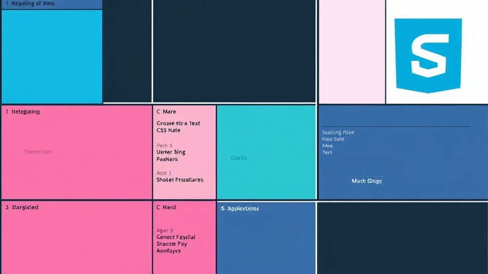

Unlock the power of two-dimensional layouts with this comprehensive guide to CSS Grid. From basic concepts to advanced techniques, build complex and responsive designs with ease.
By Upingi Team / Published on October 26, 2024
Introduction: Why CSS Grid?
CSS Grid Layout is a powerful two-dimensional layout system for the web. Unlike older methods like floats or Flexbox (which is primarily one-dimensional), Grid excels at creating complex layouts involving both rows and columns simultaneously, making tasks like aligning items in complex structures much simpler and more intuitive.

This guide aims to take you from the fundamental building blocks of CSS Grid to practical application, equipping you with the knowledge to create sophisticated, responsive web layouts with confidence.
Chapter 1: Core Concepts
To understand Grid, familiarize yourself with these terms: Grid Container (the element with `display: grid`), Grid Items (direct children of the container), Grid Lines (the dividing lines forming the grid structure), Tracks (the space between two adjacent grid lines, forming columns or rows), Gutters (the space between tracks, defined by `gap`), Grid Cells (the intersection of a row and column track), and Grid Areas (a rectangular space covering one or more grid cells, often defined by named lines or `grid-template-areas`).
.container {
display: grid;
grid-template-columns: 1fr 1fr 1fr; /* Example */
grid-template-rows: auto 100px; /* Example */
gap: 1rem; /* Example */
}
Imagine a spreadsheet; the container is the whole sheet, items are content in cells, lines define rows/columns, tracks *are* the rows/columns, gutters are the spacing, cells are individual cells, and areas could be merged cells.
Chapter 2: Defining Grid Structure
`grid-template-columns` and `grid-template-rows` define the size and number of your grid tracks. You can use fixed units (`px`), relative units (`%`, `fr` - fractional unit representing a fraction of available space), `auto` (size based on content), `minmax(min, max)` for flexible tracks, and the `repeat(count, size)` function for defining repetitive patterns efficiently.
An explicit grid is defined by `grid-template-columns/rows`. An implicit grid is created automatically when you place items outside the bounds of the explicit grid or when `grid-auto-rows/columns` properties are set.

Chapter 3: Placing Grid Items
Place items precisely using line numbers. `grid-column-start` / `grid-column-end` define horizontal placement, and `grid-row-start` / `grid-row-end` define vertical placement. The shorthands `grid-column` and `grid-row` combine start/end values (e.g., `grid-column: 1 / 3`). Use `span N` to make an item span N tracks.
You can name grid lines using square brackets in `grid-template-columns/rows` (e.g., `[col-start] 1fr [col-end]`) and place items referencing these names. Alternatively, `grid-template-areas` allows you to name regions of the grid and assign items to those named areas visually.
The `grid-auto-flow` property controls how items that are not explicitly placed (auto-placed items) fill the grid. Default is `row`, filling rows first. Set to `column` to fill columns first, or `dense` to attempt to fill holes earlier in the grid.
Chapter 4: Alignment
Align items *within* their grid cell using `justify-self` (horizontal) and `align-self` (vertical). Align the *entire grid* within its container using `justify-content` (horizontal) and `align-content` (vertical, applies when grid tracks are smaller than the container). Shorthands `place-items` (`align-items` / `justify-items`) and `place-content` (`align-content` / `justify-content`) simplify alignment declarations.
Chapter 5: Advanced Techniques
CSS Grid integrates seamlessly with media queries for responsive designs. You can nest grids (a grid item can become a grid container). Consider accessibility: ensure logical source order and test with screen readers. Grid is for two-dimensional layout; Flexbox is often better for one-dimensional layout (like navigation bars or component distribution along one axis).
Conclusion: Build with Confidence
CSS Grid provides unparalleled control over complex web layouts. By mastering its core concepts, structure definition, item placement, and alignment, you can build intricate and responsive designs more efficiently than ever before. Keep practicing, experiment with different properties, and consult resources like MDN for deeper dives.